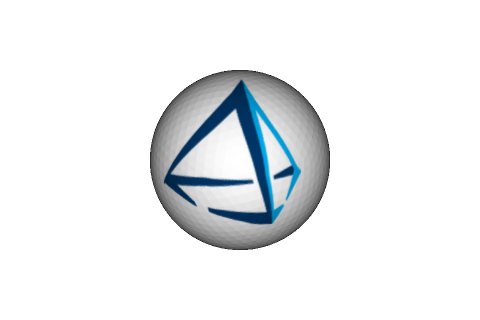
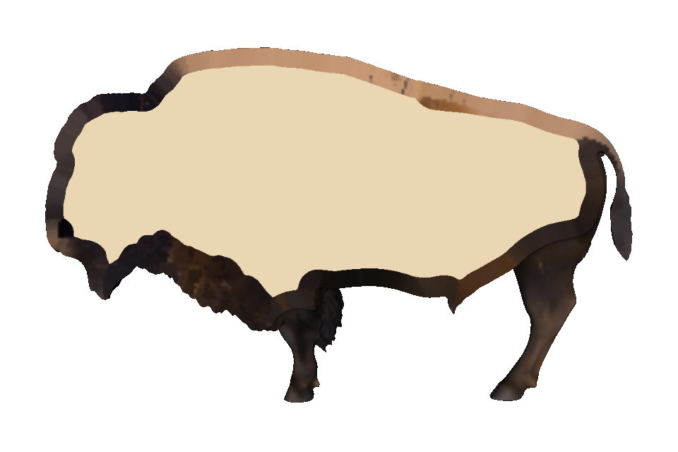
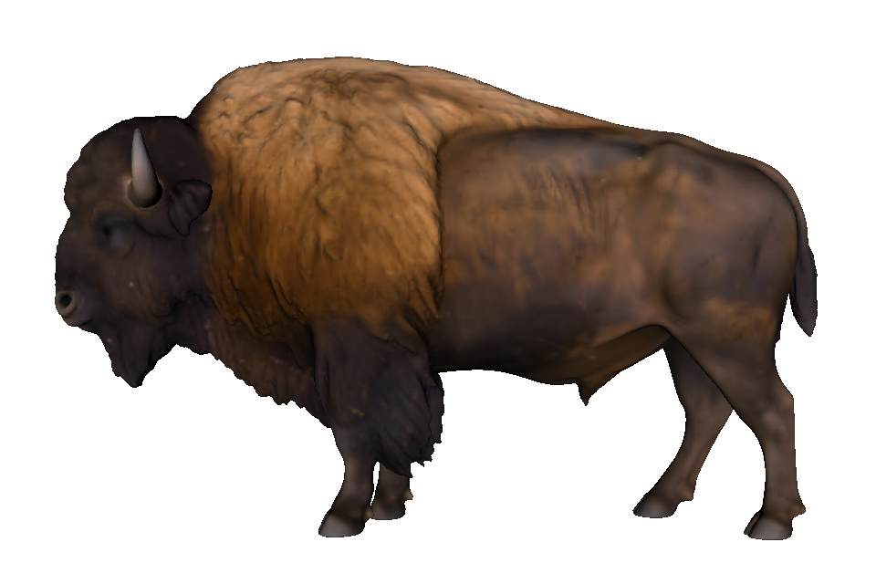
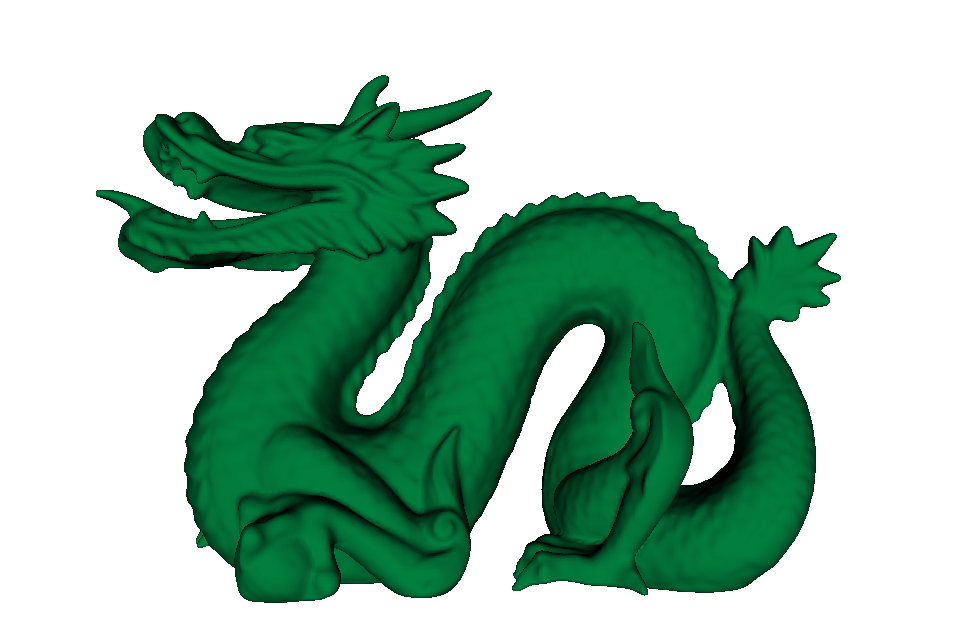
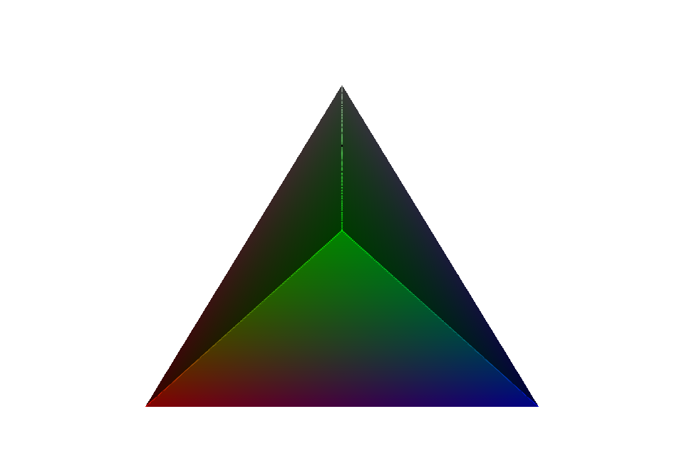
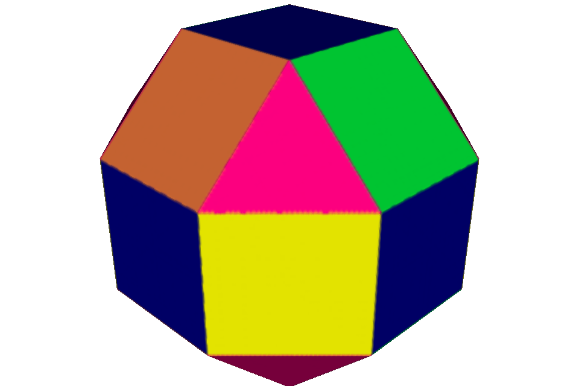

Importing textured solids#
TexturedMesh imports a 3MF or OBJ model as both printable geometry and an
intrinsic COLOR_RGBA field. It extends each surface color inward by a
configurable physical depth, then fills the remaining interior with an opaque
core color. The result can be rendered, clipped, combined with other OpenVCAD
nodes, or compiled as volumetric color.
Use this node when the source file already contains its intended appearance.
Use the ordinary Mesh node when only the geometry matters.
Load a textured 3MF#
3MF is the simplest interchange format for this workflow because its units, textures, colors, and component transforms are stored together:
import pyvcad as pv
import pyvcad_rendering as viz
root = pv.TexturedMesh(
"examples/data/textured_models/3mf_consortium/sphere_logo.3mf",
color_depth=1.5,
core_color=pv.Vec3(1.0, 1.0, 1.0),
center=True,
)
viz.Render(root)
Set the renderer’s visualized attribute to color_rgba to see the imported
color. The packaged sphere uses a PNG texture inside its 3MF container.
{kind=link}

3MF model units are converted to millimetres automatically. TexturedMesh
supports build items, component transforms, base-material colors, color groups,
texture 2D groups, PNG and JPEG images, declared addressing modes, and nearest
or filtered texture sampling. Composite and multi-properties are rejected
instead of being silently reduced to a single color.
Load OBJ, MTL, and image files#
OBJ has no standard physical unit, so set obj_unit_scale to the number of
millimetres represented by one source coordinate unit. Keep the OBJ, MTL, and
referenced image files together with their relative paths unchanged:
bison = pv.TexturedMesh(
"examples/data/textured_models/bison_buffalo/Bison_buffalo.obj",
color_depth=2.0,
core_color=pv.Vec3(0.92, 0.84, 0.70),
center=True,
obj_unit_scale=0.35,
override_voxel_size=0.3,
disable_validation=True,
)
The OBJ importer applies scene transforms and combines UV textures, vertex
colors, and diffuse material color when they are present. The bison takes its
appearance from material_0.png; the dragon below has no texture coordinates
and therefore takes its green color from the MTL diffuse material.
The two supplied scan/export meshes contain a very small number of
non-manifold edges, so these examples explicitly use disable_validation=True.
Leave validation enabled for normal inputs. Disabling it permits import but
does not repair topology, and severely defective meshes can still produce an
incorrect signed distance field.
Inspect the colored shell and core#
color_depth is measured inward from the closest point on the original
surface. A sample less than that distance below the surface receives the
surface texture or material color. A deeper sample receives core_color. The
default is a 1 mm colored shell over an opaque white core.
The headless renders below enable the renderer’s clipping plane at each animal’s anatomical midline. The plane is vertical in the animal’s standing direction: X=0 for the bison and Z=0 for the dragon. Each camera looks squarely at the resulting side section. This exposes the imported shell and contrasting core for inspection without adding a boolean operation or otherwise changing the model tree. Interactive rendering and exported compiler output remain the complete animal unless you explicitly change the geometry yourself.
Drag each slider to compare the complete exterior with the camera-matched midline section.


Complete exterior Clipped interior
Complete exterior Clipped interiorChoose the colored depth from the print process rather than the source image resolution. A larger value puts more colored material below the surface, but also increases prepared memory. The source image is mipmapped during preparation so texture detail is filtered for the selected OpenVCAD voxel size.
Other supported color encodings#
The same node also handles colors attached directly to mesh faces or vertices. No texture image is needed in either case.
{kind=link}

{kind=link}

Constructor reference#
pv.TexturedMesh(
path,
color_depth=1.0,
core_color=pv.Vec3(1.0, 1.0, 1.0),
fallback_color=None,
center=False,
obj_unit_scale=1.0,
override_voxel_size=None,
disable_validation=False,
)
Parameter |
Meaning |
|---|---|
|
A |
|
Inward colored-shell depth in millimetres; must be positive |
|
Opaque RGB color below the colored shell, with channels from 0 to 1 |
|
Optional RGB color for triangles with no imported appearance |
|
Move the resolved model’s bounding-box centre to the origin |
|
Millimetres per OBJ coordinate unit; ignored for 3MF |
|
Optional preparation resolution in millimetres |
|
Skip closed-manifold validation for a known imperfect input; defaults to |
By default, geometry must be closed, manifold, and consistently oriented.
Missing appearance is an error unless fallback_color is supplied. Texture
alpha is deliberately ignored and the emitted COLOR_RGBA alpha is always 1;
ordinary image alpha does not define a printable translucent material.
As with every OpenVCAD node, call prepare() before direct sample(),
evaluate(), or bounding_box() calls. viz.Render and the compilers prepare
the tree for their own resolution.
Compile the result for color inkjet printing#
TexturedMesh produces the opaque sRGBA field expected by the
Color Inkjet Compiler. That guide explains the
printer profile, ICC conversion, export mode, and PNG slice-stack workflow.
Each companion example also includes an EXPORT_INKJET_SLICES boolean toggle
for trying the same node tree with ColorInkjetCompiler.
Packaged examples and inputs#
The runnable examples are in examples/geometry/textured_mesh/:
01_3mf_texture.pyloads a packaged PNG-textured 3MF.02_bison_texture.pyimports a complete OBJ/MTL/PNG textured solid.03_dragon_material_color.pyimports a complete solid with an MTL diffuse color.04_3mf_vertex_colors.pyloads interpolated 3MF vertex colors.05_3mf_face_colors.pyfixes preparation resolution for per-face 3MF colors.
The 3MF inputs come from the
3MF Consortium samples under
the BSD 2-Clause License. The bison and dragon folders were supplied for these
examples without separate provenance or license files; check redistribution
rights before publishing them outside this repository. Exact included files
and available notices are listed in examples/data/textured_models/README.md.